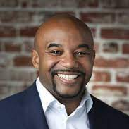

Rupa Jack
Oeconomia is super excited to announce that Rupa Jack, a Senior Vice President and Wealth Advisor at Morgan Stanley, will be speaking about personal finance and the importance of networking. She will specifically be talking about the following topics:
- How to start being financially conscious as you’re entering college
- How to make and save money through investments and other financial strategies (even when you’re under 18)
- How to network and form career connections
Russ Roberts
We are so excited to announce our next speaker event, where we will be hosting Russ Roberts, the John and Jean De Nault Research Fellow at Stanford University’s Hoover Institution and the host of the award-winning podcast EconTalk. He’s known for making difficult economics topics easy to understand in his podcast, where he has interviewed people like Milton Friedman, Jill Lepore, and Michael Lewis. We encourage you to search him up and check him out at
russroberts.info and
econtalk.org (or Wikipedia, whatever you prefer).

Daryn Dodson
Daryn Dodson is the Managing Director of Illumen Capital, the world’s first private equity firm focused on reducing implicit bias, and an advocate for social and economic justice. His work with impact investors, Fortune 100 companies, private equity funds, and universities and foundations has been aimed at addressing some of the world’s most pressing social and environmental problems. He also currently serves on the Board of Directors for Ben and Jerry’s.
Larry Stone
Larry Stone is the County Assessor for Santa Clara County and was a former Mayor of Sunnyvale. Stone has also been a financial manager on Wall Street and has co-founded a successful Bay Area real estate investment and development firm. We are excited to hear what he has to say.
Angela Ma
Angela Ma, who graduated from Harker in 2014, is a current PhD candidate in business economics at Harvard Business School and the Harvard Economics Department. Her research interests lie in financial and behavioral economics.
Matthew Jackson
Dr. Matthew Jackson is the William D. Eberle Professor of Professor of Economics and Game Theory at Stanford. He also is an external faculty member of the Santa Fe Institute, and a fellow of CIFAR. Jackson has been honored with the Social Choice and Welfare Prize, the B.E.Press Arrow Prize for Senior Economists, and a Guggenheim Fellowship.
Randall Lewis
Randall Lewis is an Economic Research Scientist in the Science & Algorithms team at Netflix. Lewis combines machine learning and econometrics to develop scalable causal measurement and prediction systems that help humans and machine-learning algorithms make optimal choices. Prior to joining Netflix in 2015, he worked at Google and Yahoo! Research where he studied advertising’s and digital markets.
You can find his blog
here.
Kelly Steckelberg
We will be holding a joint event with CareerConnect to host Ms. Kelly Steckelberg, the CFO of Zoom. She also currently holds roles as Board Member and Audit Committee Chair at Qualtrics. She will discuss her path to success, along with how she uses economic analysis in her work at Zoom today.
Guru Guruganesh
A Senior Research Scientist at Google Research, Dr. Guruganesh’s research focuses on new, provable algorithms at the intersection of algorithmic game theory, theoretical machine learning, and approximation algorithms. In his talk, he delves into the idea of equilibria being present in our day-to-day lives. He explainins various equilibria such as Mixed Nash Equilibrium and those present in the game of Chicken.